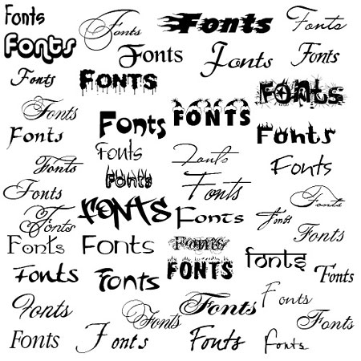

Reality Check 3: Fonts from Bézier Curves

~~~~~~~~~~
Resources:
~~~~~~~~~~
Note: I am trying to give hints and make our expectations clearer below, but
please read page 183, 184, 185, 186 and 187 of Sauer first! I am not repeating
what he is saying. You need to read the book first, then you read this.
Matlab code bezierdraw.m from Sauer: bezierdraw.m.
Python code draw.py from CU Boulder: draw.py.
~~~~~~~~~
Examples:
~~~~~~~~~
You can see the letter T in python and "picasso dog" with this COLAB.
The PDF of the letter T at PDF.
The PDF of the letter T as a text file can be seen at TXT.
The PDF of the Picasso dog at PDF.
The PDF of the letter Picasso dog as a text file can be seen at TXT.
The "real" Picasso dog can be seen at JPG.
Previous student works: PDF
~~~~~~~~~~~
Question #1
~~~~~~~~~~~
Use the bezierdraw.m Matlab program of Section 3.5 or the
Python draw.py script from CU Boulder to sketch the upper case initial of your first name.
The Python draw.py script did not work for me well using ``colab''.
I had to use a local installation of python on my laptop to get it to work.
Deliverable: You need to turn in a snapshot of your figure. (JPG format.)
~~~~~~~~~~~
Question #2
~~~~~~~~~~~
Revise the draw.py program to accept an n×8 matrix of numbers, each row
representing a piece of a Bézier spline. Two examples are given at: COLAB.
Have the program draw the lower case letter f in the Times-Roman font, using the following 21-piece Bézier curve:
289 452 289 452 166 452 166 452
166 452 166 452 166 568 166 568
166 568 166 627 185 657 223 657
223 657 245 657 258 647 276 618
276 618 292 589 304 580 321 580
321 580 345 580 363 598 363 621
363 621 363 657 319 683 259 683
259 683 196 683 144 656 118 611
118 611 92 566 84 530 83 450
83 450 83 450 1 450 1 450
1 450 1 450 1 418 1 418
1 418 1 418 83 418 83 418
83 418 83 418 83 104 83 104
83 104 83 31 72 19 0 15
0 15 0 15 0 0 0 0
0 0 0 0 260 0 260 0
260 0 260 0 260 15 260 15
260 15 178 18 167 29 167 104
167 104 167 104 167 418 167 418
167 418 167 418 289 418 289 418
289 418 289 418 289 452 289 452
Deliverable: You need to turn a colab notebook.
~~~~~~~~~~~
Question #3
~~~~~~~~~~~
Using the template above and your favorite text editor, write a PDF file that
draws the lower case letter f. The program should begin with an m command to
move to the first point, followed by 21 c commands and a stroke or fill
command. These commands should lie between the stream and endstream commands.
Test your file by opening it in a PDF viewer.
See an example for the letter T: TXT and PDF.
See an example for the Picasso dog: TXT and PDF.
Deliverable: You need to turn in a PDF file. I either will open it with
a PDF viewer to view the picture, or with a text editor to view your code.
~~~~~~~~~~~
Question #4
~~~~~~~~~~~
Here are some other PDF commands:
1.0 0.0 0.0 RG % set stroke color to red
0.0 1.0 0.0 rg % set fill color to green
2 w % set stroke width to 2
b % both stroke and fill (S is stroke, f is fill, b both)
Colors are represented according to the RGB convention, by three numbers
between 0 and 1 embodying the relative contributions of red, green, and blue.
Linear transformations may be used to change the size of the Bézier curves, and
rotate and skew the results. Such coordinate changes are accomplished with the
cm command. Preceding the curve commands with
a b c d e f cm
for real numbers a, b, c, d, e, f will transform the underlying planar
coordinate system by
x' = ax + by + e
y' = cx + dy + f
For example, using the cm command with a = d = 0.5, b = c = e = f = 0 reduces
the size by a factor of 2, and a = d = −0.5, b = c = 0, and e = f = 400 turns
the result upside down and translates by 400 units in the x and y directions.
Other choices can perform rotations, reflections, or skews of the original
Bézier curves. Coordinate changes are cumulative.
Deliverable:
(a) You need to turn in a PDF file with a colored version of the lower case f.
(b) You need to turn in a PDF file with a rotated and skewed version of the
lower case f.
(c) For (b), you need to explain what new coordinate system you are using based
on the chosen linear transformation.
~~~~~~~~~~~
Question #5
~~~~~~~~~~~
Design your own letter or numeral or simley or picture in PDF. You should begin
by drawing the figure on graph paper, respecting any symmetries that might be
present. Estimate control points, and be prepared to revise them later as
needed.
It can be a smiley face, it can be a Chinese character, it can be a race car,
etc. Minimum number of Bézier curves is 20. No maximum but keep it
reasonnable. Do not spend more than four hours on this. It is easy to get
excited and work too much. Henc and I reserve a part of the grade to aesthetic,
originality, creativity, etc. which is subjective.
Deliverable:
You need to turn in a PDF file with your own design "character".
Here are some examples of past students' projects: PDF
~~~~~~~~~~~
Question #6
~~~~~~~~~~~
Save your PDF file (the f letter PDF file for example) as a PNG file (for example). Look at both pictures,
then zoom in on a detail of the letter. Take a snapshop of the zoom-in using PDF and the zoom-in using PNG. Explain.
Deliverable:
You need to turn in a snapshot of the zoom-in with PDF and the zoom-in with
PNG. Zoom-in in an "interesting" region. You need to turn in an explanation of
what you are seeing and why.